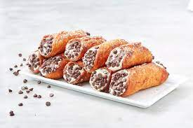

Authentic Italian Cannolis

Cannolis are Italian pastries made out of fried pastry dough in a cylindrical shape, filled with a sweet, creamy fillings usually consisting of ricotta.
Food historians place the origins of cannolis back to Caltanissetta, Sicily between 827-1091. A similar dessert exists in the Middle East, potentially inspired by the Sicilian Cannoli.
Ingredients
Shells:
2 cups all-purpose flour
1 tablespoon grandulated sugar
1/4 teaspoon kosher salt
1 tablespoon plus 2 teaspoons unsalted butter, cut into small pieces
1 egg yolk
1/2 cupo white wime
Filling:
2 cups ricotta cheese, preferably whole milk
3/4 cup powdered sugar
1 teaspoon ground cinnamon
1/4 teaspoon allspice
1/4 cup heavy cream
1/4 cup small semisweet chocolate chips
1 lemon
1 quart canola oil, for frying
Flour for rolling
1 egg, lightly beaten, for egg wash
Powdered sugar, for dusting
Steps
For the shell dough: In a medium bowl, sift together the flour, sugar, and salt. Work the butter pieces into the flour with your fingers until the mixture becomes coarse and sandy. Add the egg yolk and the white wine and mix until it becomes a smooth dough. Spread a piece of plastic wrap on a flat surface and place the dough in the center. Wrap the plastic loosley around it and press the dough to fill the gap. Flattening the dough will mean less rolling later. Let it rest in the fridge for a few minutes while you make the filling.
For the filling: In a medium bowl, whisk the ricotta until smooth. Sift in the pwdered sugar, cinnamon and allspice. Mix to blend. In a seperate bowl (or in the bowl of an elecctric mmixer fitted with the whisk attachment_, beat the heavy cream until fairly stiff. Using a rubber spatula, gently fold the cream into the riccotta mixture. Stir in the chocolate chips. Lightly zest the exterior of the lemon and stir it into the ricotta. Refrigerate for a half hour to an hour.
To roll and fry the shells: In a medium pot with a heavy bottom, heat the canola oil to 360 degrees F. Meanwhile, sift an even layer of flour on a flat surface. Flour a rolling pin. Roll the dough until it is very thin (about 1/8-inch thic). Cut the dough into fourths and work in small batches. Use any glass or small bowl that has a 3-to-4-inch diameter. Cut rounds, tracing around each one to assure the dough has been fully cut. You should have about 24 circles. Wrap each circle around a cannoli mold. Use a little of the egg was on the edge of each round to seal it shut and to assure it won't slide or fall off the mold ebfreo pressing it close over the mold before pressing it closed over the mold. Flare the edges out slightly from the mold. Flaring will allow the oil to penetrate each cannoli shell as they fry. Use a pair of tongs to hold the edge of the mold as you submerge and fry the shell in the oil until cripsy. 2 to 3 minutes. Remove from the oil, and holding the mold in one hand with you tongs, gently grip the shell in your other hand with a kitchen towel and carefully slide it off the mold. Set aside to cool. Repeat with all of the circles.
To fill the cannolis: Just before serving, use a pastry bag without a tip to pipe the ricotta into the cannoli molds. Fill the cannoli shells from both ends so the cream runs through the whole shell. Dust with powdered sugar. Powdered sugar give that little extra sweetness and added texture to the exterior. Serve immediately.